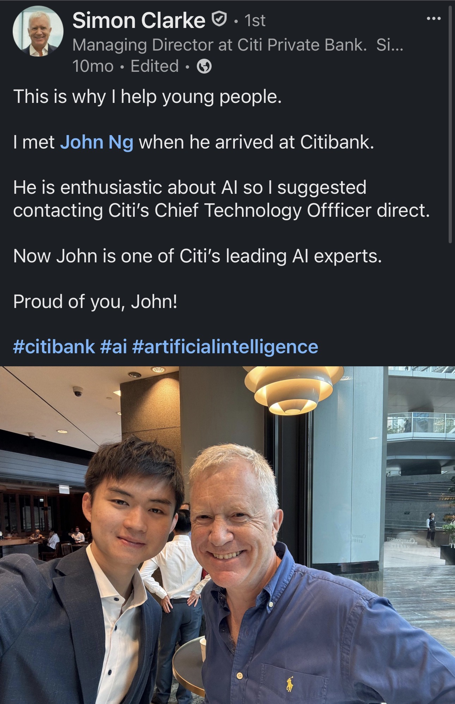

We began with real work
Everyday friction, banker workflows, client needs, and responsible adoption gave experimentation a clear purpose.
A perspective shaped by banking, AI, and the people who make change possible.
Across roles, functions, and generations, we can turn curiosity into shared understanding—and shared understanding into practical change.
I work at the meeting point of leadership intent, frontline experience, and the energy of people who want to build something better.

Trust opened the first door
The journey began with a generous question. My mentor, Simon Clarke, asked what I cared about most in my career. My answer was immediate: the possibility of AI changing how people work for the better.
Simon encouraged me to reach beyond the boundaries of my role and contact Citi’s Global Chief Technology Officer. That act of belief became more than a personal opportunity. With supportive leaders, curious colleagues, and teammates willing to experiment, we turned one conversation into shared momentum.
“This is why I help young people. He is enthusiastic about AI, so I suggested contacting Citi’s Chief Technology Officer directly.”
Simon Clarke · Managing Director at Citi Private Bank
My contribution Taking the first step, staying with the work through resistance, and helping the opportunity grow beyond one person.

The AI Solution Lab
Digital transformation cannot live in an ivory tower. It becomes real when leaders, practitioners, control partners, and frontline colleagues can question, test, and learn together.
Through Citi’s CEO-sponsored AI Solution Lab, we brought together people from different functions around a practical purpose: understand where AI could help, build responsible use cases, and share what worked in language colleagues could use.


Everyday friction, banker workflows, client needs, and responsible adoption gave experimentation a clear purpose.
Across 28+ sessions, more than 1,700 colleagues explored tools, challenged assumptions, and shared practical use cases.
Local pilots contributed to wider capability, including the Citi Stylus Workspaces journey to approximately 150,000 colleagues globally.
Reverse mentoring
We helped pair 30+ senior leaders with AI enthusiasts—not to transfer knowledge in one direction, but to create continuous cross-learning.
Emerging talent brought fresh fluency and new questions. Senior leaders brought context, judgment, and the ability to turn insight into organizational momentum. Trust made it possible for both sides to say what they did not yet know.
Technology was never the end goal. Better conversations, stronger judgment, and more capable people were.
My contribution Helping shape the pairings, supporting ongoing conversations, and making psychological safety part of the learning model.


The circle widens
The same belief shaped our work with secondary-school students through Citi AI Day and the SEED Foundation’s IdeaPOP! programme: help young people build judgment, resilience, and the confidence to become more than users of technology.
What the work keeps teaching us
The more we learn, the more important it becomes to stay curious about what we do not know—and grateful to the people who make progress possible.
Responsible transformation earns trust by respecting expertise, risk, and the people affected by change.
Intellectual humility lets teams test assumptions early and improve ideas together.
The best technology gives people stronger judgment and more room for meaningful work.
Every opportunity we receive can become a pathway for someone else.
An open invitation
If you are thinking about how leaders, practitioners, and emerging talent can shape responsible digital transformation together, I would value the exchange.
Exchange perspectives on LinkedIn